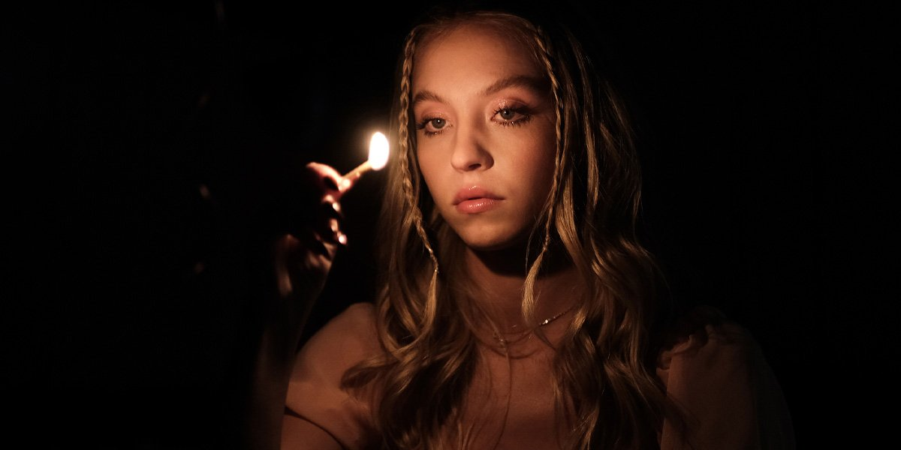
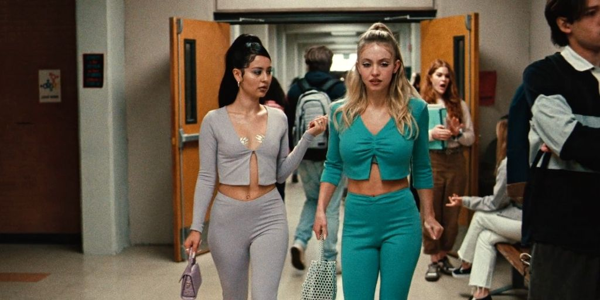

Reseñas
Encuentra las reseñas de los últimos estrenos de las mejores películas y series que estamos seguros tendrían Sala Llena.
¿El mejor capítulo de Euphoria?
Por Ayesha Salas
Euphoria es una serie de drama adolescente original de la plataforma de streaming HBO, dirigida por Sam Levinson y protagonizada por actrices como Zendeya, Hunter Schafer, Alexa Demie, Sydney Sweeney, por mencionar algunos.
Más que un resumen de la serie, nos enfocaremos en el mejor capítulo de la temporada 2: el episodio 4 “You Who Cannot See, Think of Those Who Can”. Este cuarto episodio lo encontramos dividido en 3 partes, la situación entre Rue (Zendaya), Jules (Hunter Schafer) y Elliot (Dominic Fike), la noche de Cal (Eric Dane) y finalmente la fiesta de cumpleaños de Maddy (Alexa Demie) y a pesar de eso nos enfocaremos en las referencias al arte y su significado dentro del capítulo.
El capítulo comienza con la voz de en off de Rue narrando todo lo que siente por Jules, pero no de la forma habitual, durante este episodio nos encontramos con un homenaje a diversas referencias del cine y del arte, pinturas como ‘El nacimiento de Venus’ de Botticelli en donde podemos observar cómo es que Rue ve a Jules: como una diosa a la cual admirar por su belleza, seguido de este nos encontramos con una representación de ‘Los Amantes’ de René Magritte, en donde podemos observar a dos individuos que con la cara cubierta representa y cegados por el amor son incapaces de comunicar todo ese amor que sienten el uno por el otro, tal como nuestras dos protagonistas, durante estas escenas también nos podemos encontrar con el ‘Autorretrato como tehuana’ de Frida Kahlo, el cual se caracteriza por tener un elemento muy significativo y llamativo: Frida tiene en la frente el retrato de Diego Rivera, de la misma forma que Jules tiene a Rue, sabemos que la relación entre Frida y Diego no era sana, estaba llena de muchas situaciones desgastantes y que terminan por afectar más a Frida, tal como Rue piensa que pasara con ellas, poniéndose en la posición de la persona que hace mayor daño. Nos encontramos con adaptaciones de escenas de películas como ‘Ghost’ con Demi Moore y Patrick Swayze, ‘Brokeback Mountain’ y hasta ‘Titanic’ en donde se le ve a Rue personificando a Leonardo DiCaprio y a Jules como Kate Winslet en sus respectivos papeles, sin embargo, lo interesante aquí es ver como Rue se pone en el papel del personaje que al final de la historia acaba por morir.

Durante estas escenas podemos observar la referencia que se hace hacia la idea del amor romántico que estas obras de arte nos han ayudado a construir, la idea de idealizar a la pareja, de llevar la relación hasta el punto más insano para alguna o ambas partes y el hecho de que estas historias terminen en desgracia con la muerte de uno de los dos, y aunque el amor de Rue hacia Jules es tan grande podemos ver este inicio como la ironía debido a la forma en que termina el capítulo.

Justo en la escena final podemos encontrarnos a Cassie en un escenario lleno de rosas rosas y ella al centro llorando, y a pesar de que los espectadores buscaron referencias hacia esta escena tan increíble en temas visuales (relacionándolo con películas como Middsomar) Levinson ha aclarado que se inspiro en los altares mexicanos hechos a la virgen de Guadalupe, poniendo a Cassie en posición de un personaje digno de adorar y de admirar, que es puro, frágil, y que además está sufriendo.
Como podemos observar, son muchas las referencias artísticas y culturales con las que carga este capítulo y que forman parte de la estética tan particular y que tanto gusta de Euphoria.

A continuación el avance promo de este capítulo de Euphoria 2
Dune Parte 1 “La fórmula perfecta para crear algo unico”
Por Carlos González
No es la primera vez que la novela de Frank Herbert ve la pantalla grande, Jodorowsky intentó realizar el proyecto con un equipo de fantasía donde participaría Dalí, Mick Jagger, Pink Floyd y solo por mencionar algunos, desafortunadamente el proyecto nunca vio la luz. Pero en 1984 David Lynch hizo que Dune sucediera, aunque esta contó con demasiados problemas de producción, dando como fruto un fracaso y decepción para todo el público.
La nueva adaptación cinematográfica de las crónicas de Dune llega de la mano y mente de Denis Villeneuve, se podría decir que Dune era hasta ahora un proyecto imposible, ya que hablamos de llevar una de las mejores sagas de ciencia ficción por excelencia escrita por Frank Herbert. Pero ¿Cómo logra Denis Villeneuve materializar el imposible en una cinta posible y acertada? Villeneuve presenta un filme que demuestra que contando con la fórmula perfecta puedes asegurar algo único. Dentro de Dune se encuentra Eric Roth como guionista (Forrest Gump, El curioso caso de Benjamin Button, etc.), Director de fotografía a Greig Fraser (Rougue One: Una historia de Star Wars, The Batman, Lion, etc.) y el encargado de la Banda Sonora Hans Zimmer (Interesterlar, Dunkerque, Gladiador, etc.). Con este equipo es inegable que Dune prometía ser una experiencia total y efectivamente no decepciona en ningun momento, pero el elemento más importante recae en las actuaciones de Rebecca Ferguson, Oscar Isaac, Timothée Chalamet, Stellan Skarsgård, Javier Bardem, Zendaya, entre otros grandes actores, Dune cumple con la expectativa de hacernos sentir fuera de este mundo, desde el inicio al final presenciamos algo diferente, se siente fresco para la ciencia ficción no cayendo en el abismo de hacerlo diferente porque es futurista.
Dune narra solo una parte del primer libro de Herbert, Villeneuve dice que solo había una manera de que una adaptación así sucediera, partiendo la historia madre en dos, así que el público quedara satisfecho o insatisfecho con el final no porque sea malo, sino porque la cinta se siente como un alba siendo el final el amanecer. Una de las mejores virtudes de Dune es que a pesar de ser una historia que se desarrolla en el desierto, no es una cinta que se sienta monótona ni repetitiva, los escenarios y la fotografía crean un espectáculo visual. Hans Zimmer el hombre que musicalizó Interestelar propone una banda sonora nuevamente única y no únicamente futurista, sino eterna y fuera de esta galaxia. Zimmer experimenta con la voz humana y algunos otros instrumentos, pero sin duda el elemento más importante es la voz, un elemento que según él siempre prevalecerá, algo que tiene coherencia absoluta si pensamos que si en miles de años cualquier instrumento desapareciera el único instrumento que tendría el humano es su voz.
Para el público que esperaba ver a Zendaya en cada cuadro de la cinta le resultara decepcionante que contara con poco más de 5 minutos en pantalla, aunque la culpa de esto no es de la cinta, sino del equipo que se encargó de venderla a ella como protagonista, al menos en esta primera entrega no es así. Pero a quienes amaran ver creando un vínculo de Madre e Hijo es a Timothée Chalamet y Jessica Ferguson como Paul Atreides y la Dama Jessica, ambos tienen una conexión que pareciera salida del mismo libro, no podemos imaginar a un par mejor para encarnar ambos papeles. Cada actor encarna a su personaje como si hubiera sido hecho para ellos, Stellan Skarsgård es el mejor villano que Dune pudo tener en esta entrega, con un equipo de maquillaje increíble, sorprende con una apariencia física irreconocible y estamos seguros de que Timothée Chalamet no pudo pedir un mejor padre para Paul más que a Oscar Isaac como el Duque Leto.
A continuación el avance de Dune
Landscapers: Episodio Uno
Por Carlos González
Protagonizada por la grandiosa Olivia Colman y David Thewlis esta produccion de HBO dirigida por Will Sharpe, nos trae una nueva historia para la televisión porque para la vida real no lo es, ya que narra la historia de un matrimonio que por 15 años oculto el acecinato de los padres de Susan la esposa de Christopher Edward, fue así hasta que en 2013 por razones que no spoilearemos la verdad comienza a ver la luz. El primer capitulos nos deja claro desde el inico que la pareja se vera involucrada en un interrogatorio y presa de su libertad, aunque no nos diran el motivo de porque se encuentran ahí. Es un deleite desde el primer cuadro donde comienza el capitulo, retomando elementos del cine de antaño mezclandose sutilmente con la “modernidad”. Gracias al gusto de Susan por las peliculas del viejo oeste es que precensiamos un sin fin de elemntos y escenas que nos recuerdan a este genero de peliculas. La fotografía es excelente, al menos del primer capítulo, es notorio que la producción disfruta y explora muy elegante el color, y se ayuda y enriquece con el juego de luces que puede dar cada escenario.
Como siempre Olivia Colman nunca decepciona, nos brinda una hermosa acuación encarnando a Susan, David Thewlis como Chris es el retrato perfecto de un esposo consumido por su esposa y el mundo…o eso parece hasta el momento. Sucede algo único y extraordinario en esta serie, los policias quienes siempre buscan atrapar a los delincuentes se muestran esta vez con trabas no solo en su busqueda sino que tambien en su organizaxión, casi se siente torpes, aunque no caen en la tipica pareja de policias que no son aptos para el trabajos, simplemente vemos a la policia tal cual es, no vemos a super policias como las series de crimenes narran. Al ser el primer capitulo se nos revela que se ha cometido un crimen y el treidor o quien los delata es el mismo Chris, así que es tiempo de elegir un bando ¿Lo hizo por el o por ambos? nada de nuestras preguntas se resuelve en este capitulos, no hay un bando, más bien se siente como un equipo, a pesar de la traición de Chris, auque podemos notar cierta tención entre ambos y podemos observar que juntos han tejido una red de mentiras que pronto se deshilara y realemnte dentro de sus planes para librarse de cualquier cosa hay una aire de que algo saldra mal.
Cuando hablamos sobre la iluminación y fotografía no lo decimos porque sea hermosa, que claramente lo es, sino porque realmente se siente como si fuera un personaje más, como si ambas fueran los ojos del espectador, un espectador que esta escuchando las conversaciones de stos personajes tan enigamticos, por ejemplo las escenas dentro del departamento de Susan y Chris, en especial el comedor, es casi como si estuvieramos ahí, se siente tan intimo que casi creemos que estamos espiandolos. El primer capítulo logra que el espectador se sienta dentro de la trama, casi puedes sentir las escenas, la manera que esta serie arranca no es una serie habitual, y mucho menos como una serie de crimen se cuenta, no debemos esperar un formato policiaco o algo parecido, esto no es La Ley y el Orden esto es arte y crimen.
A continuación el avance de Landscapers
Red: Un futuro GIGANTE para Pixar
Por Carlos González
La nueva producción del estudio de animación Pixar llegó este año y con ella sorpresas para el público y podría decirse que para el mismo estudio, dejando ver un poco sobre el futuro para Pixar Red trae consigo una historia que se siente como un nuevo comienzo, algo refrescante y diferente. Y es que después de una racha de películas de Toy Story o secuelas como Los Increíbles 2 el estudio comenzaba a sentirse estancado, aunque esta ruptura parecía empezar a verse desde estrenos como Coco o Luca, aunque Pixar siempre ha sido cuna de historias diferentes para Disney Luca y Coco comenzaron a preparar al público para historias más maduras sin dejar de ser para aptas para infantes, entonces Red llega lista para decir “esto es Pixar ahora”... y esperemos que así sea. Pubertad, sobreprotección y menstruación son algunos temas que explora Red y su producción orgullosamente llena de mujeres, esta es la primera película dirigida por una mujer en Pixar, Domee Shi, quien ha participado en producciones como Intensamente, Toy Story 4 y dirigió el cortometraje Bao, hace historia como la primera mujer en dirigir una película para el estudio, esto es tan importante, ya que se estima que solo el 26% de personas que trabajan en animación son mujeres, Domee Shi no es la única mujer dentro de esta producción, también se encuentra como productora Lindsey Collins y guionista Julia Cho entre otras. No hay que confundir Red con una pelicula de fantasía, es obvio que nadie se convierte en un Panda rojo cuando sus emociones se agitan, es decir no se desarrolla en un mundo mágico ni hay hadas o gente con poderes sobrenaturales, Red es una metáfora sobre la pubertad que experimentan todas las niñas y niños, en este caso se enfoca al de las niñas, a pesar de que su personaje principal Mei Lee una niña de 13 años se convierte en un panda rojo gigante no vemos una película parecida a otra del estudio, experimenta con un estilo de animación diferente, es como si la animación 3D se mezclara con lo anime kawai, o algo parecido.
Red se sitúa en el año 2000 así que es obvio que cosas como tamgotchis, boy bands, accesorios coloridos o cd’s estarán más que presentes. Cualquiera que haya pasado o esté pasando por esa etapa podría identificarse, incluso en lo más mínimo. Corrían los rumores que la historia no sería bien recibida, aunque este solo es un comentario anticuado, Red hace que tantos temas que evitaba el estudio se sientan tan orgánicos dentro de la trama, en definitiva para todo el equipo de mujeres que estuvieron involucradas les espera un gran futuro, es emocionante ver que una nueva brecha ha sido abierta dentro de Pixar y esta la hicieron mujeres. Si estás pensando en verla será mejor que corras, pero no al cine, sino a tu lugar más cómodo y le des play en DisneyPlus, porque desafortunadamente este es el segundo estreno de Pixar que Disney decide moverlo exclusivamente a su plataforma, aunque se haya anunciado en cines, el tiempo dirá si estos cambios no le traen problemas a la empresa internos o externos. Se han publicado noticias sobre empleados de la lámpara saltarina a los cuales estas medidas no les está agradando, y es de esperar que se escuche más historias como estas, la pregunta es ¿Disney está castigando a Pixar o simplemente tiene miedo a contar estos cambios en pantalla grande?
A continuación el avance de RED
Una visión colorida de la la land
Por Ayesha Salas
La la land: Una historia de amor, película musical del género de drama/romance, dirigida por Damien Chazelle y protagonizada por Emma Stone y Ryan Gosling y además ganadora de dos premios Óscar: Mejor director y mejor actriz. Sebastian (Ryan Gosling) y Mia (Emma Stone) son una pareja cuya historia, como todas, comienzan con dos desconocidos que por cuestiones de la vida terminan coincidiendo en muchos de los lugares a los que van: la carretera, un restaurante y finalmente una fiesta en donde finalmente tienen una conversación. Todo parece ir bien entre ellos, se enamoran, se mudan juntos, apoyan los sueños del otro, pero por distintas decisiones y caminos de la vida, sobre todo sus sueños personales, terminan por separarse para poder construir sus vidas el uno sin el otro. Sebatian, apasionado del jazz, se decide a renunciar a la banda de la cual formaba parte para finalmente cumplir su sueño de abrir su club de jazz. Mia por otro lado, después de renunciar a su trabajo de barista y fracasar con su obra, finalmente se convierte en una reconocida actriz, se casa y tiene una hija.
Hablemos de uno de los elementos visuales más importantes de La la land: el color. A lo largo de la cinta podemos observar escenas y momentos marcados por distintos colores, principalmente 3: morado, azul y rojo. Mía se asocia con el color azul, todo el tiempo esta rodeada por este color, la vemos vestida de azul durante muchas escenas, en distintos tonos que nos marcan distintas etapas de su vida, este color nos trasmite la personalidad de Mia, una persona calmada, tranquila, llena de mucha paz y serenidad; aunque también lo podemos asociar a la creatividad, puesto que lo vemos mucho en los momentos creativos, cuando Sebastian toca o Mia actúa. Por otro lado, identificamos a Sebatian con el color rojo, al igual que Mia lo vemos rodeado y vistiendo atuendos rojos en muchas escenas, representa su personalidad fuerte y algo explosiva, Sebastian había pasado por distintas situaciones en donde se sentía incomodo, primero estaba desempleado, tocaba con bandas que no le gustaban y firma contrato con una que no seguía las mismas convicciones que él, podemos asociar este color también como señal de peligro, está ubicado como focos rojos a lo largo de la cinta. La combinación del azul y el rojo nos da como resultado el color más importante y representativo de toda la película: el color morado, el cual representa el amor, el amor entre Mia y Sebatian, lo podemos encontrar en un sinfín de escenas, pero la primera en donde lo encontramos es cuando salen de la fiesta en busca del auto de Mia, los vemos cantar y bailar y de fondo observamos un cielo nocturno de este color que nos refleja la ilusión y el principio de su historia. Posteriormente lo encontramos en muchas otras escenas, pero sobre todo en donde nuestros protagonistas se encuentran juntos, felices y enamorados. Así como estos 3 colores principales podemos encontrar muchos otros, uno de ellos, y aunque muy poco visto en la cinta es el verde, este color lo encontramos en momentos de desagrado y en puntos de quiebre, la cafetería donde trabaja mía es de este color, el vestido que usa cuando sale con su exnovio Greg es verde, la escena en donde Mia y Sebastian cantan juntos City of stars (antes del quiebre de su relación) y finalmente cuando pelean en la cena sorpresa. En este color podemos encontrar un guiño a Vertigo (Alfred Hitchcock, 1958), significando envenenamiendo o en este caso distanciamiento, nos marca los momentos previos a el fin de la relación.
A continuación el avance de LaLaLand
Por Ayesha Salas
Seven es una película de suspenso y misterio dirigida por David Fincher y protagonizada por Brad Pitt y Morgan Freeman. Seven sin duda es la película que marco un antes y un después en la historia de los thrillers gracias su director, Fincher no solamente supo contar la historia a través de los diálogos, sino a través de las imágenes. Seven cuenta la historia de dos detectives William Somerset (Morgan Freeman) quien está a punto de jubilarse y David Mills (Brad Pitt) el detective que será asignado en el puesto de Somerset. Desde las primeras tres escenas se nos arrojan datos relevantes de cada uno de los personajes, por un lado, que el detective Somerset es una persona ordenada, recta y meticulosa, mientras que el detective Mills es el opuesto, un personaje desordenado, desastroso y arrogante, juntos tienen que resolver una serie de homicidios los cuales están relacionados con los siete pecados capitales: gula, avaricia, pereza, envidia, ira, orgullo y lujuria.
Todo sucede en una gran ciudad de Estados Unidos, aunque realmente nunca se menciona el nombre de ésta, prestándose a la propia interpretación del espectador y convirtiendose en un personaje más de la historia, todo el tiempo nos encontramos ante paisajes grisáceos y oscuros, la mayor parte del tiempo los días están nublados y en alguno otros llueve, el ambiente es de misterio, fúnebre y de miedo, nadie sabe quién podría ser la nueva víctima del homicida, realmente la única vez que vemos la luz del sol es al final de la cinta, cuando finalmente se tiene bajo arresto a homicida y se han cometido los 7 asesinatos, es decir, el caso esta resuelto. John Doe (Kevin Spacey), autor de los 7 asesinatos cometidos se presenta como el único en toda la ciudad realmente “preocupado” por la sociedad en que se vive y los pecados que se cometen, incluso menciona que hay un pecado en cada esquina y que nadie hace nada alr especto, razón por la cual se decide a ponerle fin a estos materializándolos en personas y matándolas bajo esa primicia, reflejando que ese pecado es la verdadera razón que los llevo a morir. John es seguro, firme, no tambalea en sus decisiones, ni siquiera se muestra arrepentido al entregarse a la policía, pues después observamos que realmente nos encontramos ante su último acto, el ultimo asesinato de la lista y Fincher sabe cómo manejar las escenas y transmitirnos esto en un lenguaje que sobrepasa lo visto en las escenas mismas. Cuando vemos a los protagonistas llegar a la escena del último pecado podemos observar como las tomar no son fijas, éstas se mueven, son bastante inestables, y siguiendo a los detectives mientras corren, hablan e incluso cuando están parados fijos en el suelo la cámara tambalea puesto que el asesino los ha hecho perder la cordura, mientras que las escenas en donde vemos a John son firmes, están fijas, no se mueven ni un poco mostrando la seguridad del personaje, a pesar de todo el se mantiene firme ante los actos que cometió, sin mostrar arrepentimiento. Fincher realmente sabe jugar con las tomas y lo que muestra en ellas, observamos closeup solo cuando son necesarios y los movimientos de cámara nos dicen más de lo que escuchamos en los diálogos, la escena en donde Somerset, el jefe de policía y Miller están hablando nos muestra la forma en que Miller primero es ignorado por los otros dos y la forma en que posteriormente se mete en la conversación, poco a poco pasan de no mirar a la cámara a estar de frente a ella viéndonos directamente y esto es gracias al ingenio de del director de la cinta.
A continuación el avance de Seven